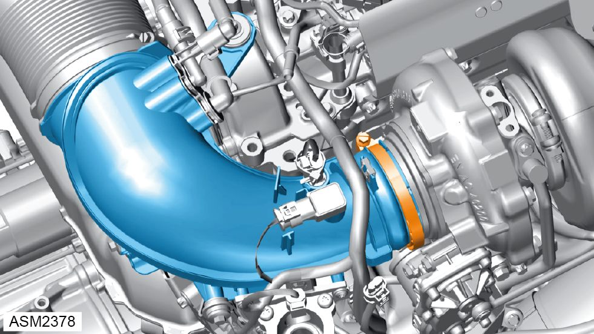
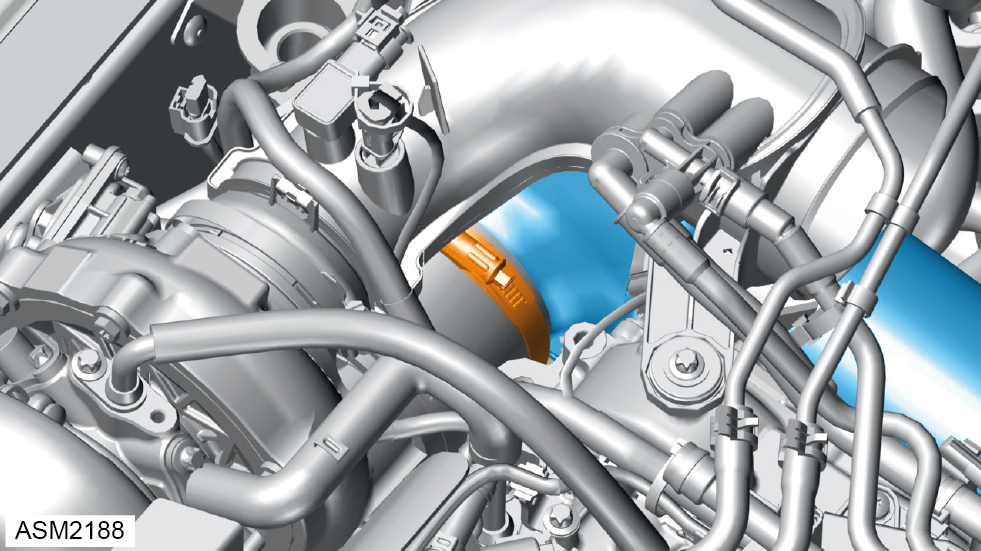
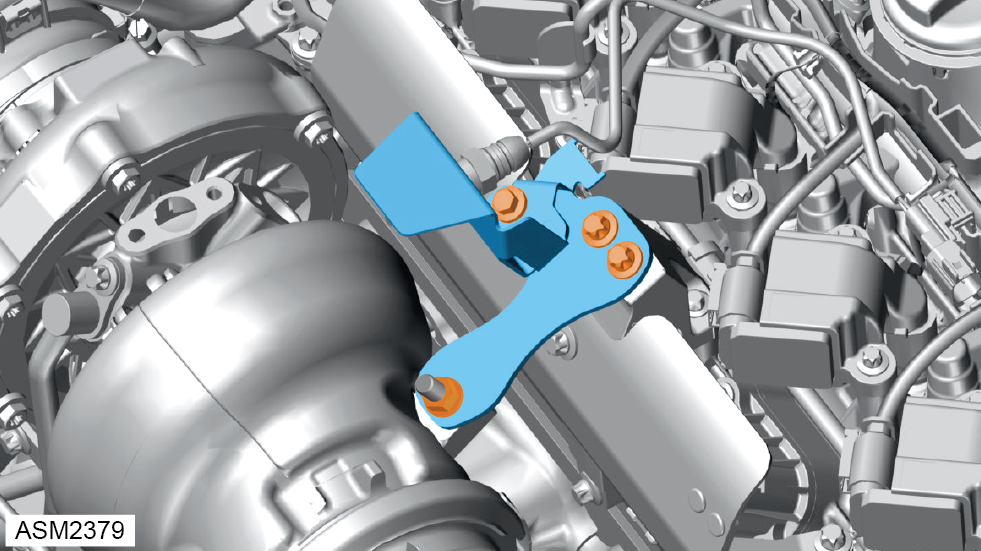
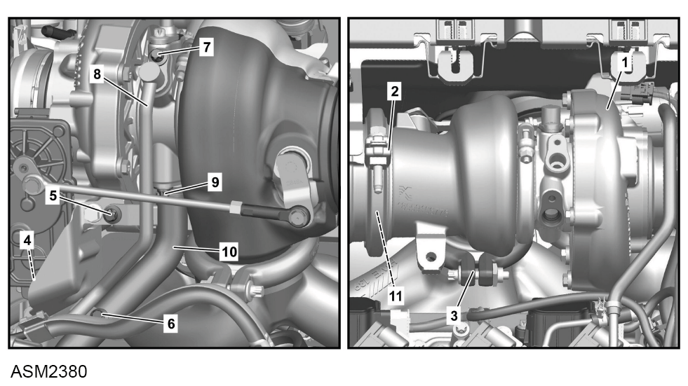
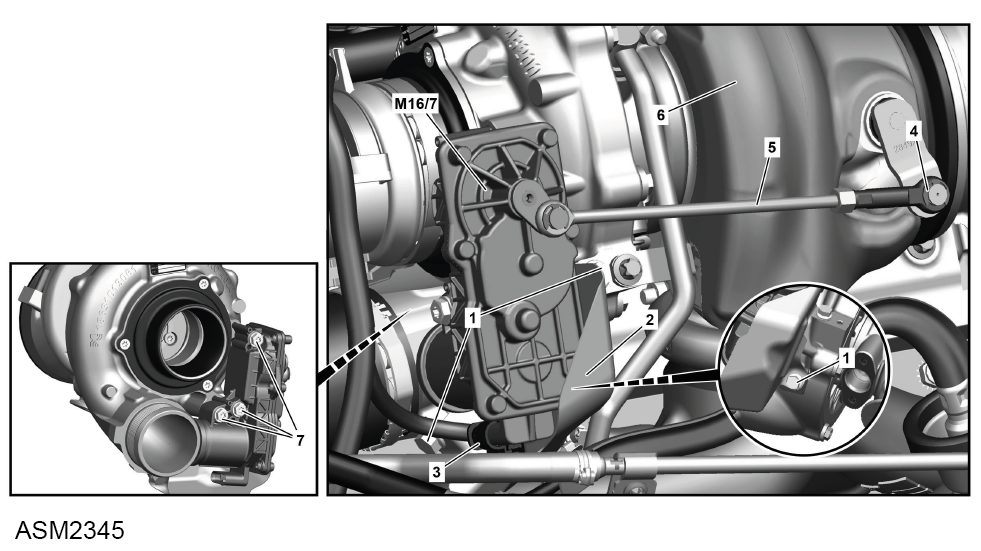

Turbocharger with Actuator - 4 Cylinder
Print
Operation Code: 40.21.12-02
Removal
- Remove coolant feed line. Refer to procedure.
- Remove oil feed line. Refer to procedure.
- Remove boot box access panel. Refer to procedure.

- Loosen clamp securing air inlet pipe to turbocharger.
- Disconnect air inlet pipe from turbocharger.

- Release clamp securing air manifold to turbocharger. Torque 4 Nm.
- Disconnect air manifold from turbocharger.

- Remove bolts (x3) and nut securing bracket to engine and turbocharger.
- Remove bracket.

- Remove bolts (5 and 6) securing coolant return line (8) to turbocharger (1) and oil return line (10). Torque 8 Nm.
- Remove bolt (7) securing coolant return line to turbocharger. Torque 8 Nm.
- Disconnect coolant return line from turbocharger.
- Remove bolt (9) securing oil return line to turbocharger. Torque 8 Nm.
- Disconnect oil return line from turbocharger.
- Remove and discard clamp (2) securing turbocharger to catalytic converter. Torque 21 Nm.
- Remove and discard clamp (3) securing turbocharger to exhaust manifold. Torque 21 Nm.
- Remove turbocharger.
Do not carry out further disassembly if component is removed for access only.

- Remove bolts (1) (x3) securing heatshield (2) to turbocharger (6). Torque 8 Nm.
- Remove heatshield.
- Remove retaining washer (4) securing linkage (5) to turbocharger.
- Release linkage from turbocharger.
- Remove bolts (7) (x3) securing actuator motor to turbocharger. Torque 9 Nm.
- Remove actuator motor.
Installation
- Installation is the reverse of removal procedure except for the following:
- Renew discarded seals and clamps.